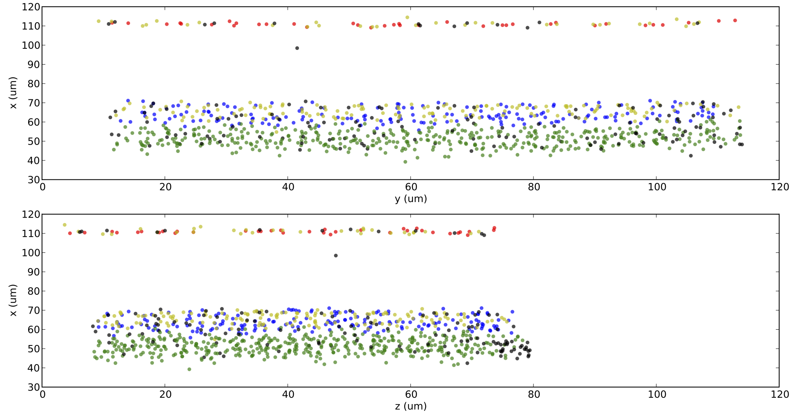
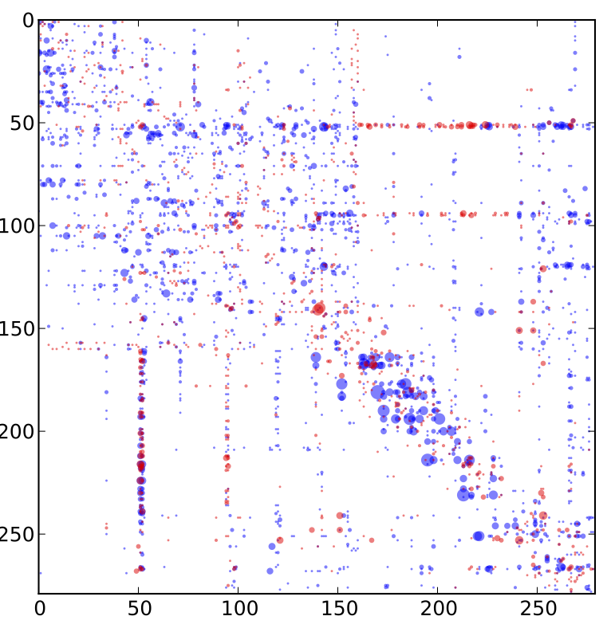

Automatic Discovery of Cell Types
Datasets
The three main datasets used in the paper are available in cleaned-up form on Github. Here we outline briefly the origin and preprocessing on the data, although full details and code are avilable at the github site.
Mouse Retina
The original data is from
Helmstaedter, M., Briggman, K. L., Turaga, S. C., Jain, V., Seung, H. S., & Denk, W. (2013). Connectomic reconstruction of the inner plexiform layer in the mouse retina. Nature, 500(7461), 168–174. doi:10.1038/nature12346]
which can be accessed here. Briefly, dense serial electron microscopy of a $114\mu m \times 80 \mu m $ area in the mouse retina yielded a listing of places where neurons come into contact. There were over 1000 cells originally, and selected the 950 for which the location of the soma could be reconstructed from the provided cell plots (soma locations were not provided by the study's authors in machine-readable form). Ultimately this left a matrix between the total synapse-like contact area between all pairs of 950 cells. Area was thresholded at 0.1um, determined by hand, to yield a 950 x 950 entry matrix that served as input to our algorithm. We measured the distance between cells using the reconstructed soma centers. Here, for example, is the resulting adjacency matrix, with the size of entry in the matrix proportional to the number of contact points.

And here are the physical location of the cell bodies of each cell, colored by anatomist-derived cell type, in x-y-z.

C. Elegans.
We obtained the connectome of c. elegans from data published previously \autocite{Varshney2011}, and isolated the 279 nonpharyngeal neurons, with a total of 6393 chemical synapses and 890 gap junctions originally cleaned up in \autocite{Chen2006}. A cell's position was its distance along the anterior-posterior axis normalized between zero and one. We used both networks, the chemical network as a directed graph and the electrical network as undirected graph. We use the synapse counts with the logistic-distance poisson likelihood, scaling the counts by 4.0 to compensate for the Poisson's overdispersion.
The connectivity of the worm, c. elegans -- blue are chemical synapses, red are electrical synapses.

Microprocessor
The team at Visual 6502.org performed a connectome-like reconstruction of the original MOS Technology 6502 8-bit microprocessor and used it to build a cycle-accurate transistor-level simulation We extracted the connection graph for the transistors from this data. Each transistor has three terminals (gate, source, drain), but the methods of the original dataset were unable to consistently resolve which of the C1 and C2 terminals were source and drain, leading to ambiguity in our encoding. We identified a region consisting of three registers X, Y, and S via visual inspection and focused our efforts there. We created a total of six connectivity matrices by examining possible terminal pairings.